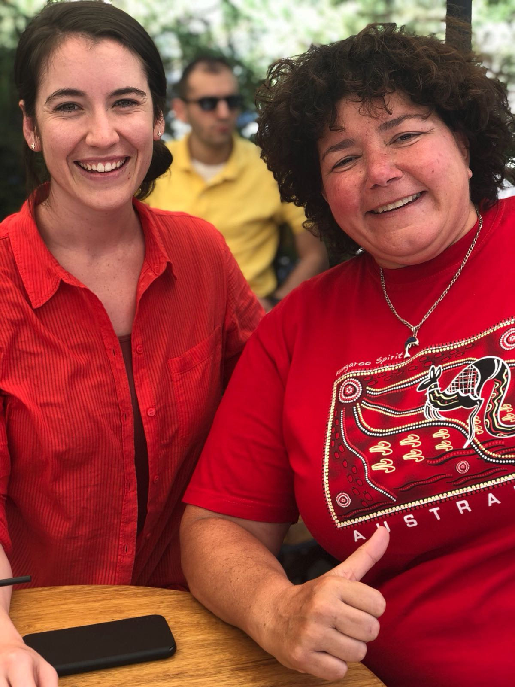
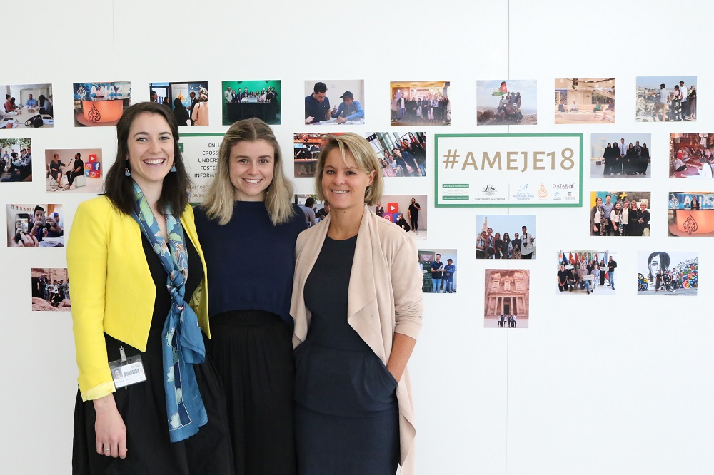

In July 2018, I was part of the Australia-Middle East Journalism Exchange (#AMEJE18) program, which aims to improve cross-cultural understanding by fostering better informed journalism.
While in Qatar and Jordan, we took part in professional and cultural activities designed to build our skills and knowledge in an effort to enhance their career prospects.
We visited the Al Jazeera newsroom in Doha and Arab Reporters for Investigative Journalism (ARIJ) in Amman.
We also visited cultural institutions, mosques, Petra, and the Jerash refugee camp in Jordan which sparked an ongoing interest in the Middle East.
We worked especially closely with Middle East University in Amman, working collaboratively on journalism projects while on tour.
One of my most outstanding experiences was meeting with fellow journalists while in Jordan.
In Amman, I reached out to Rana Husseini, a crime reporter with the Jordan Times. For the past 20 years, she has been an activist working to expose so-called honour crimes in the country. Her work has given voice to victims and has helped drive changes in the way these crimes are treated in court. It was an inspiration to have met with her.
Gabrielle's interview with Rana Husseini.
I joined the #AMEJE18 study tour for the opportunity to develop a better understanding of the Middle East and its people, and to learn how to better uncover and report a range of stories for audiences back home. In the process, I experienced first-hand the change that a journalist can make.
The value I took from the #AMEJE18 tour is immeasurable, and was only possible thanks to the support of the Council for Australian-Arab Relations.
